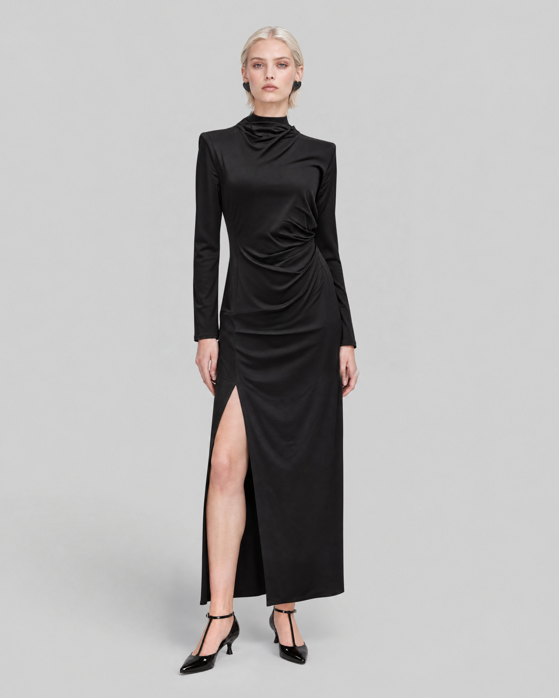

Accueil / Journal
Le journal The Kooples : idées look, entretien et tendances
Une tenue pour chaque occasion, des conseils pour faire durer vos pièces en cuir, en laine ou en soie, et les tendances de la saison : tout pour choisir et porter vos pièces.
Rechercher un look, une matière, une occasion
Idées lookGuide d'entretienTendances et rockFemmeHommeTous les articles
Tendances
Les plus lus
01
Quelle tenue chic pour une femme ? 6 looks à composer
Idées look · 6 min de lecture
02
Tenue de soirée femme : les robes pour briller cet hiver
Idées look · 5 min de lecture
03
Comment laver un pull en cachemire sans l'abîmer ?
Guide d'entretien · 4 min de lecture
04
Couleurs tendance 2026 : ce qu'on portera cette saison
Tendances et rock · 5 min de lecture
05
Nettoyer et entretenir une veste en cuir
Guide d'entretien · 4 min de lecture

Le style rock
Adopter le look rock au féminin
Cuir, dentelle, noir et bottes : les pièces pour composer une tenue rock, du jour au soir.
Lire l'article  JOURNAL
JOURNAL